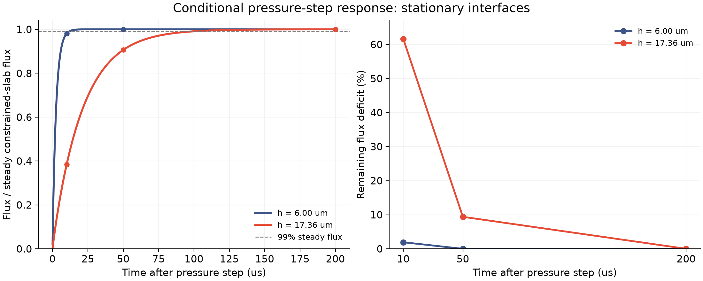

独立条件诊断 · 2026-11-13
压力变了，水流会立刻
达到稳定速度吗？
先在一个边界条件明确、能写出解析参照的小问题里，量出膜厚方向流动建立的时间，再决定真实边缘需要保留哪些动态。
这里把两个表面的切向速度都固定为零。它是受约束液层的经典压力阶跃问题，不是自由肥皂膜。当前原生求解器没有被替换，5 微米长计算继续运行。这张图不能证明它有错，也不能解释已有空间误差的原因。
厚的区域，可能更晚进入准静态
采用已冻结原算例的密度与黏度。蓝线对应初始中心膜厚 6 微米；红线对应原 10 微米网格非浴液节点中的最大初始膜厚。压力梯度取 1 Pa/m，只作为线性探针，下面的归一化响应不依赖这个幅度。

| 液层厚度 | 最慢模态时间 | 达到 99% 的时间 | 10 μs 响应 | 50 μs 响应 | 200 μs 响应 |
|---|---|---|---|---|---|
| 6.00 μm | 2.54 μs | 11.67 μs | 98.07% | 100.00% | 100.00% |
| 17.36 μm | 21.27 μs | 97.64 μs | 38.40% | 90.61% | 99.99% |
这些数字说明：即使在这个简单问题中，厚度不同也会改变建立流动的时间。它支持继续检查局部边缘的时间尺度；还不足以采用无记忆边界交换律。
怎样确认这次小计算算对了？
两种算法交叉核对
解析模态级数与独立的膜厚方向有限体积离散比较，使用 32、64、128、256 个单元，误差随加密下降。
独立核对能量
用高斯积分核对压力输入功、动能变化和黏性耗散；同时检查级数截断误差。这里通过的是本条件问题的检查。
最细有限体积归一化通量最大误差：2.916e-05；能量相对残差最大值：1.875e-14。全部事前诊断门槛通过。没有运行新的原生排液轨迹，也没有引入拟合速率。
自由肥皂膜还要多检查什么？
真实自由界面需要满足切向应力条件，表面张力梯度、表面应力和伸展流动都可能参与。文献中的自由膜推导与这里的固定表面速度问题不同；不能直接把这条经典通量公式当成完整自由膜边界模型。
下一步应比较实际原生变量与连续速度、界面速度及应力的对应关系，在相同边界条件下联合检查通量和界面功；再与运动膜—局部边缘接口连接。原有 2% 时间、10% 空间及 50／200 微秒检查不变，交换系数、薄膜元厚度比、整体条纹和实验验证仍未完成。
原始文献：van Nierop, Scheid & Stone (2008), JFM 602, 119–127，附录 A。该文支持自由界面应力与伸展流动的背景，本文瞬态受约束液层级数为独立推导；没有使用文中的拟合表面黏度。